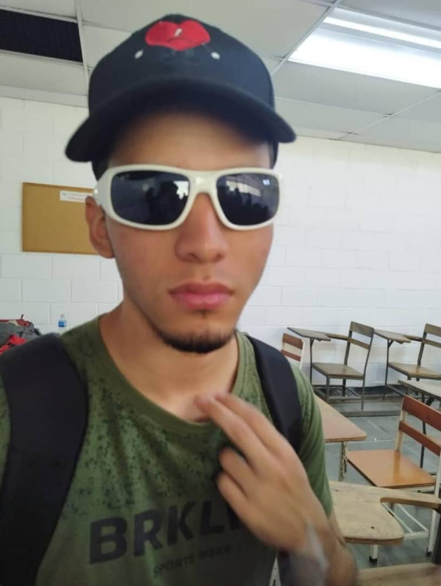

En un lugar de la mancha, de cuyo nombre no quiero acordarme, no ha mucho tiempo que vivia un hacendado rural llamado "Alonso Quijano", frisaba la edad de nuestro por los 50 años, era de complexión recia, seco de carnes, enjuto de rostro, y la mirada consumida por un fuego interior. Los ratos que andaba ocioso (que eran los más del año) se daba a leer libros de caballerías, y tanto se enfrascó en su lectura que se le pasaban las noches leyendo, de claro en claro y los días de turbio en turbio, y así del poco dormir y del mucho leer y pensar se le secó el cerebro, y rematado ya su juicio vino a dar en el más extraño pensamiento que diera a loco en el mundo: Hacerse caballero andante e ir por toda la tierra buscando aventuras y deshaciendo todo tipo de agravios. Ya nunca más volvería a ser "Alonso Quijano" a secas si no el intrépido caballero conocido como "Don Quijote de la Mancha".
Si necesitan comunicarse conmigo me pueden escribir a: mauriciogonzalez1256gmail.com